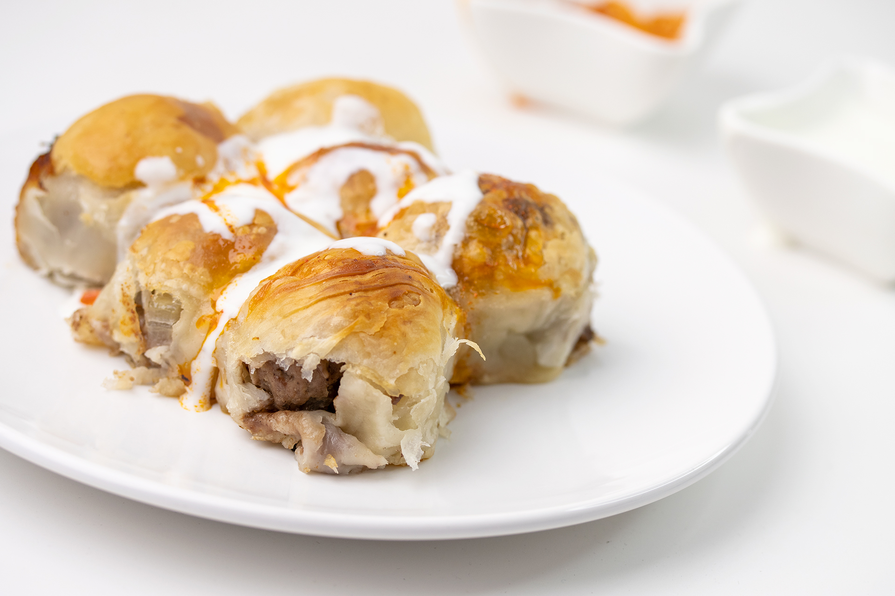

Mantije
Home

Opis:
Mantije so vrsta mesne pite, ki jo na Kosovu obravnavajo kot kraljico.
Pripravljajo jih tudi v Bosni in Hercegovini, Turčiji in morda še kje drugje.
Priročne so na potovanjih in se odlično podajo k hladnemu jogurtu.
ZA TESTO:
- 700g pšenične gladke moke
- žlička in pol soli
- 400ml vode
ZA NADEV:
- 40g masla
- 150g rdeče čebule
- 400g mletega govejega mesa
- 1 žlička vegete
- pol žličke soli
- pol žličke popra
ZA SKORJO:
- 125g razstopljenega masla
Priprava:
-
V veliki skledi zmešajte moko, sol in vodo,
nato pa z električnim mešalnikom dobro premešajte,
dokler ne dobite mehkega testa.
Skledo pokrijte s kuhinjsko krpo in pustite počivati 30 minut.
-
V ponev dajte maslo in ga segrevajte, dokler se ne stopi.
Dodajte drobno sesekljano čebulo in jo na srednji temperaturi pražite
4–5 minut, da postane prozorna.
-
Dodajte meso, zelenjavo, sol in poper ter pustite, da se počasi kuha,
dokler voda, ki jo je meso spustilo, ne izhlapi.
Meso počasi kuhajte še 2–3 minute, nato ga odstavite in pustite, da se ohladi.
-
Testo razvaljamo na pomokani površini, ga razdelimo na 8 enakih kroglic,
jih premažemo s stopljenim maslom in pustimo počivati približno 20 minut.
-
Vsako kroglico rahlo razvaljajte z valjarjem,
nato pa jo z rokami nežno raztegnite,
da oblikujete tanek list testa (velikosti približno 50 x 70 cm).
-
Ko je prva skorja razvaljana,
jo namažite s stopljenim maslom in nanjo položite drugo skorjo.
Postopek ponavljajte, dokler ne porabite vseh skorj.
-
Nastalo skorjo narežite na 15 enakih kvadratov
in nanje enakomerno razporedite pripravljeno meso.
-
Napolnjene kvadratke prepognite tako, da se diagonalni robovi srečajo,
nato pa jih s spojeno stranjo navzdol položite v namaščen pekač (19 x 32 cm),
kot da bi zlagali žemljice.
-
Ko napolnite pekač, jih premažite s stopljenim maslom
in pecite v predhodno ogreti pečici na 230 °C 35–40 minut.